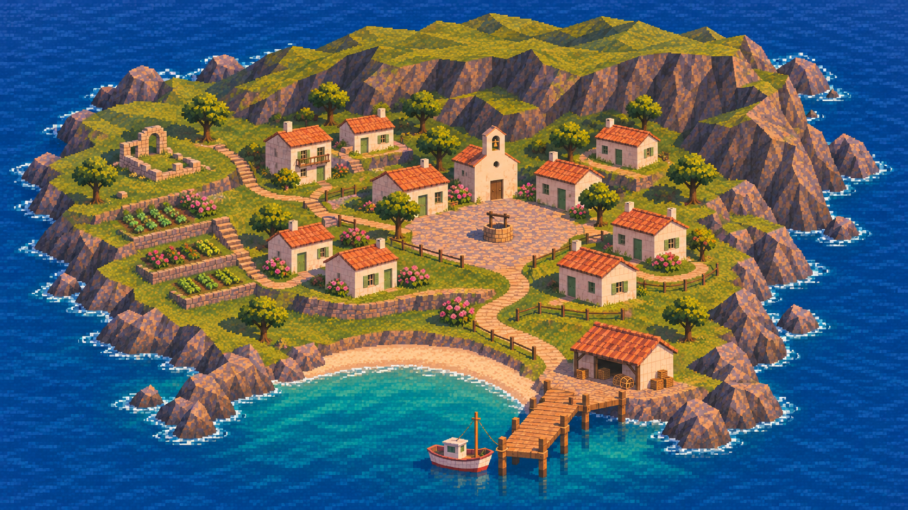
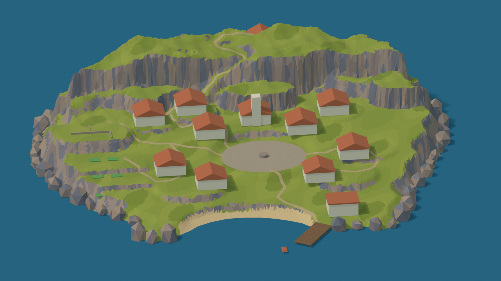
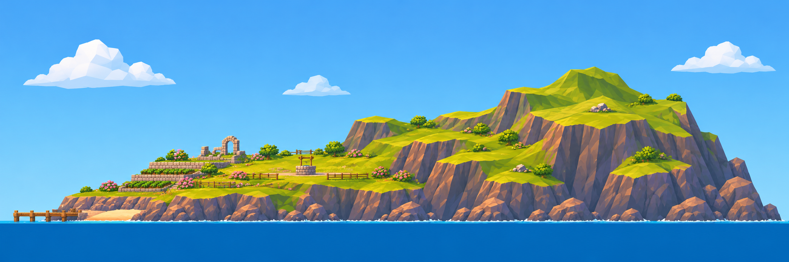
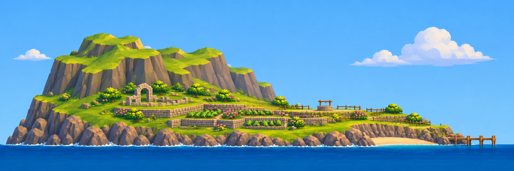
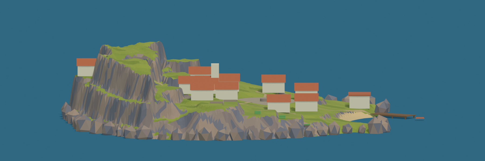

Superior


A imagem aérea é o oráculo por decisão do usuário em 13/11/2026. As outras vistas ajudam na comparação e cedem em divergências. Esta é uma maquete de relevo com edifícios provisórios; a exatidão visual ainda não foi aprovada. As câmeras são aproximações da perspectiva ilustrada.








Planta ortográfica vertical adicional · Captura da maquete anterior